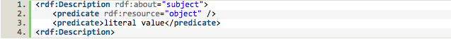
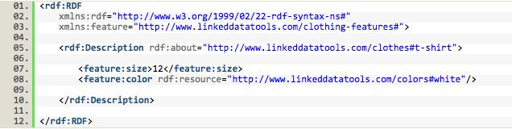

What is RDF?
- RDF stands for Resource Description Framework.
- RDF provides a model for data, and a syntax so that independent parties can exchange and use it.
- If the graph data model is the model the semantic web uses to store data, RDF is the format in which it is written.
- RDF is designed to be read and understand by machines instead of humans. Thus RDF itself is semantically meaningless.
- RDF is written in XML.
How does RDF work?
First, you can think of the wrold wide web as a web that is made up with relationships among all kinds of resources.
Second, RDF, a.k.a. resource description framework, as its name suggests, defines a way to describe resources. Simply you can think of each description as a collection of triples with a subject, a predicate and an object.
For example,
{Apple, is, company}, {Steve Jobs, is, human}, {Apple, founder is, Steve Jobs}.
- Triples like these represent the concept of properties.
- Predicates can be viewed as edges.
- Subjects and objects all refer to nodes in a graph.
The more triples like these we have, the more we know about Apple Inc.
But what if one day we waht to insert another triple {Apple, is, fruit}?
To eliminate any ambiguity, RDF uses a collection of identifiers called
URIs (
Universal
Resource
Identifiers) to represent each unique resource on the world wide web.
Once everything has an unique representation, we can say a triple in RDF should follow the format
{URI, URI, URI}.
With enough triples like these, we can buid a knowledge web. Furthermore, by merging all these small knowledge webs together, we then have a giant semantic web, and every element inside is unambiguous and queryable. With the semantic web, we can perform simple operations and inductions to gain new knowledge based on existing ones.
Write RDF in XML
A RDF statement basically follows the forms as below:

For example:

This RDF document means that resource "http://www.linkeddatatools.com/clothes#t-shirt" has size of 12 and color of "http://www.linkeddatatools.com/colors#white".
You can find a more comprehensive tutorial about RDF grammars and rules at
HERE.